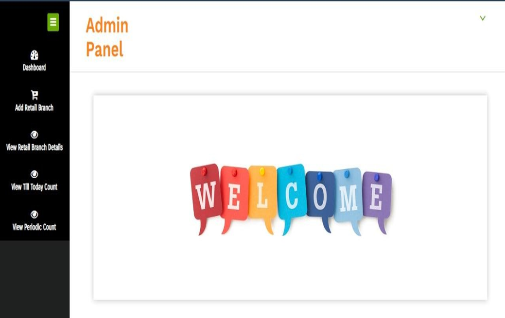
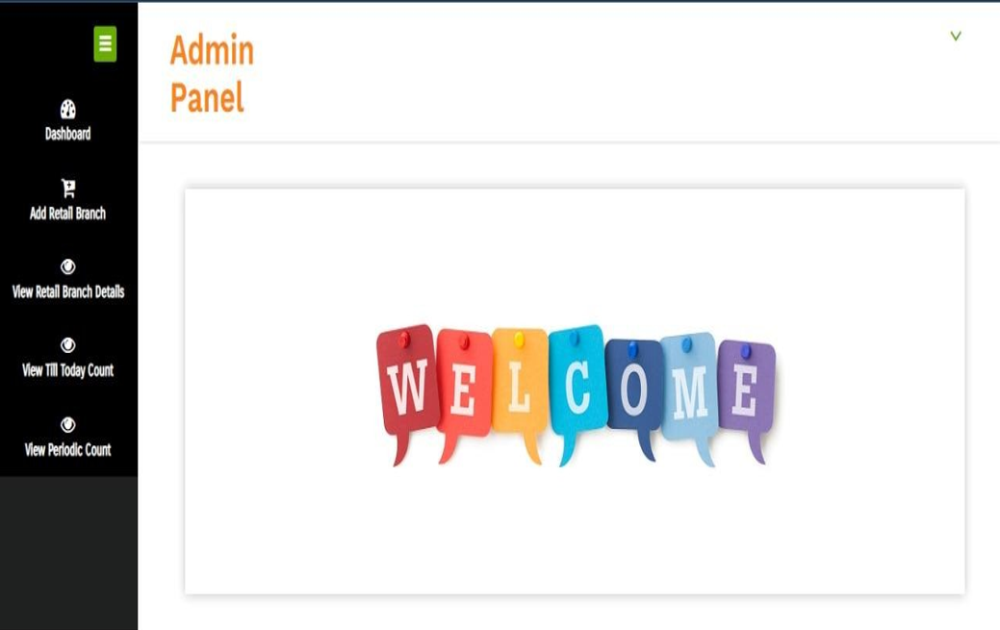

Here are the output üòá
 


Internet of Things is the fastest growing technology. Like Information Technology revolutionized every field in the early years of twenty first century, the internet of things is about to forward the same legacy. IoT is about to find application everywhere and in everything. The concept of IoT is so scalable, versatile and ubiquitous. Internet of Things (IoT) is a rapidly expanding technology area that is shaping up to bring the next revolution in information systems and computing technologies with intelligence to communicate between devices without the human intervention. Implement IoT to count the people in the Mall using Ultrasonic sensors with Arduino Uno.With the proliferation of IoT Devices such as smart phones, sensors,actuators, cameras, and RFID etc. It is possible to collect massive amount of data for localization and counting of people within Retail Industries.
Build a System People Counter system using IOT for the Production and Manufacturing Industries to reduce the loss over shortage of Instruments or Components and increase in accuracy of counting the instruments or components. This methodology can be implemented in any Industry which uses Scale Counting method. Ultrasonic sensors are used for the detection of existence of the persons and it will count the people in the Mall entering.
When Ultrasonic sensors detects an object, it actuates the Servomotor connected with Ultrasonic Sensor. The Servomotor will start to record and store the video in secure server for effective analysis. In this project, Internet of Things has been used to built a visitor counter which can be monitored online. This paper gives brief description about an assistive system designed for Industries in order to help them bring more accuracy over counting system before packaging and reduce the huge loss and saves money. This method is cost efficient and can be easily implemented. The IoT project developed here is built on Arduino UNO.
The Arduino is one of the earliest and most popular prototyping boards. So It is assumed that the reader has gone through the project how to get started with the arduino and done all the things discussed in it.The Arduino is interfaced with ESP8266 Wi-Fi modem to connect with an internet router and access the cloud server. The visitor counter circuit is designed using IR sensors. The Arduino based IoT device simply passes the count of the visitors to the cloud. As the data is updated on the cloud, it can be accessed online using any smart phone or computer. also the system will check the number of person in a mall if the number of person are more then the system will display a message reached maximum person limit, Please wait. We will be using the Ultrasonic sensor for counting the people entering in the mall. LCD For displaying the messages, and Servo motor for opening and closing door.
Keywords: Arduino Uno, Count,Servo motor, Ultrasonic Sensor,IOT.